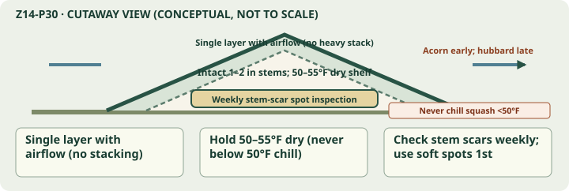

Z14-P30 · Food production and preservation · New manuscript
Store cured winter squash, pumpkins, and sweet potatoes in cool-dry airflow
Preserve dense, nutrient-rich winter squash and sweet potatoes for months inside ordinary dry home rooms without chilling rot.
When it applies · Cured butternut, hubbard, kabocha, buttercup, delicata squash, pie pumpkins, and cured sweet potatoes.
Equipment · Slatted dry shelves or single-layer cardboard trays in a 50–55°F dry closet, spare room, or dry basement shelf.

Actions
- Arrange cured, intact-stem winter squash in a SINGLE LAYER with slight air space between fruits (avoid stacking heavy squash onto one another, which bruises skins and traps hidden condensation) on dry shelves at 50–55°F and 50–70% humidity.[P04, P05]
- Store acorn squash for earlier autumn eating (typically 1–2 months) while saving thick-skinned hubbard and butternut varieties for mid-to-late winter; keep sweet potatoes strictly above 50–55°F (never refrigerate raw sweet potatoes—cold causes hard woody cores and rapid decay).[P05]
- Check squash bottoms and stem scars weekly—cook, freeze, or properly pressure-can (cubed ONLY per USDA tested recipes—never pureed!) any squash showing a tiny soft spot before rot consumes the whole fruit.[P05, P06]
Failure recognition · Stacking 20 heavy butternut squash three-deep inside a damp 38°F root cellar, causing chilling pits and black mold across the whole pile.[P05]
Verify · Confirm single-layer airflow, intact stems, dry 50–55°F location, and weekly stem-scar spot checks.[P05]
Stop or change course · Soft sunken dark lesions or mold fuzz require immediate removal from the shelf to protect neighboring squash.[P05]
Evidence and editorial notes
- P04 · University of Minnesota Extension · Harvesting and Storing Home Garden Vegetables (current web edition)
- Section: Harvesting Maturity, Curing, and Post-Harvest Handling · Conditions: Home garden root crops, winter squash, onions, potatoes, and greens
Support: Harvest crops at proper maturity during cool morning hours without bruising, cure storage crops (onions, garlic, winter squash, potatoes) at crop-specific warm/dry conditions before cold storage, and cull any nicked or diseased items for immediate use.
Limitations: A single bruised or rotting vegetable spreads decay rapidly across an entire storage bin. · Conflicting evidence: None; explains why curing precedes long cold storage.
Editorial note: Anchors harvest-to-storage quality gates in Z14. · Specialist reviewer: Post-harvest horticulture specialist
Primary source · checked 2026-11-24 - P05 · University of Minnesota Extension · Harvesting and Storing Home Garden Vegetables (current web edition)
- Section: Root-Cellar and Cold-Storage Temperature/Humidity Zones · Conditions: Basements, root cellars, unheated porches, and insulated cold bins
Support: Match stored produce to distinct storage regimes: cold-moist (32–40°F, high humidity for carrots/beets/cabbage), cool-moist (45–50°F for potatoes), cold-dry (32–35°F dry for onions/garlic), and cool-dry (50–55°F dry for winter squash); separate ethylene-producing apples from sensitive vegetables.
Limitations: Storing potatoes below 40°F converts starch to sugar; freezing temperatures ruin unhardened stored roots. · Conflicting evidence: None; prevents treating one basement temperature as universal for all crops.
Editorial note: Core root-cellar zoning and monitoring evidence in Z14. · Specialist reviewer: Post-harvest horticulture and food storage
Primary source · checked 2026-11-24 - P06 · USDA / NCHFP · USDA Complete Guide to Home Canning (2015 / current NCHFP edition)
- Section: Complete Guide to Home Canning > Principle of Tested Protocols · Conditions: All residential home canning (boiling-water and pressure canning)
Support: Treat every USDA/NCHFP tested canning recipe as a single indivisible system: food pH, piece size, liquid viscosity, jar size, headspace, processing method, pressure/temperature, time, and altitude adjustment must all match the tested protocol.
Limitations: Adding extra starch, flour, oil, fats, or altering acid/low-acid ratios slows heat penetration and can cause lethal botulism. · Conflicting evidence: Directly prohibits online untested shortcuts and heirloom recipe alterations.
Editorial note: Foundational system-integrity rule across all Z14 canning cards. · Specialist reviewer: Food preservation process authority and Extension
Primary source · checked 2026-11-24
Source lineage · UMN Extension Harvesting and Storing Vegetables; new manuscript · Classification · New manuscript.